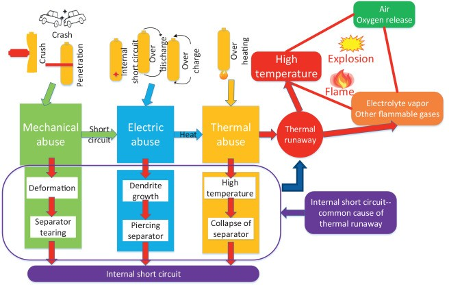
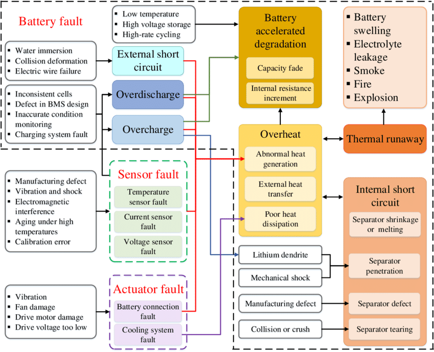
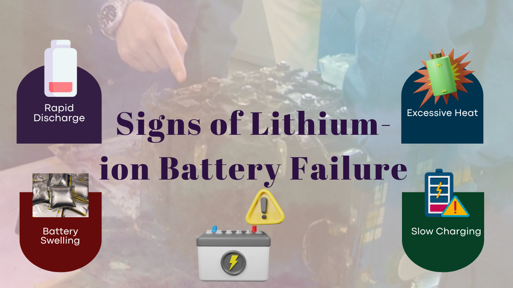
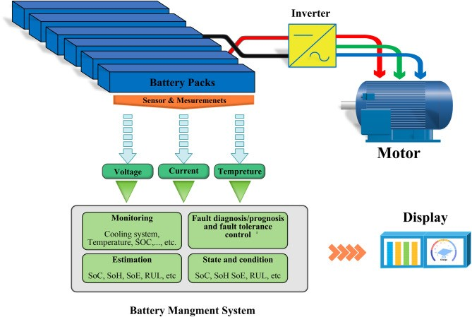

Lithium-ion batteries are widely used in various applications, from portable electronics to electric vehicles. However, they can fail due to multiple factors, leading to safety hazards and performance issues. Understanding the stages of failure, common causes, diagnostic methods, and recent research developments is crucial for effective management and prevention of these failures.
Stages of Lithium-ion Battery Failure
Lithium-ion battery failures typically progress through several identifiable stages:
- Initiation Abuse Factor: The failure begins with some form of electrical, thermal, or mechanical abuse. Battery management systems can often detect this early stage by monitoring the physical characteristics of the battery cells.
- Off-Gas Generation: As the battery starts to fail, electrolytes break down, generating gas that may escape from the cell. This stage varies in timing based on the type of abuse; for instance, mechanical damage can lead to immediate off-gassing.
- Smoke Generation: Following off-gas generation, smoke may begin to appear as the failure progresses toward thermal runaway, where temperature increases uncontrollably.

Common Causes of Lithium-ion Battery Failures
- Capacity Fade: Over time, lithium-ion batteries gradually lose their ability to hold a charge. This is primarily due to the degradation of active materials within the battery cells. Factors contributing to capacity fade include:
- Cycling: Repeated charging and discharging cycles can lead to the formation of solid-electrolyte interphase (SEI) layers on the electrode surfaces, which consume lithium ions and reduce active material.
- Temperature: High temperatures accelerate aging processes within the battery, leading to faster capacity fade.
- Overcharging/Overdischarging: Exceeding the battery's recommended voltage range can damage the electrodes and cause irreversible capacity loss.
2. Increased Internal Resistance: As batteries age, their internal resistance increases. This leads to:
- Reduced charging/discharging rates: Higher internal resistance limits the rate at which the battery can be charged or discharged.
- Increased heat generation: Higher internal resistance results in more heat generation during operation, which can further accelerate aging.
3. Thermal Runaway: In extreme cases, internal short circuits or excessive heat can trigger a thermal runaway reaction. This is a chain reaction where heat generated by one cell can cause adjacent cells to overheat, leading to a fire or explosion.
4. Gas Evolution: During normal operation and aging, some gases are produced within the battery cells. Excessive gas evolution can lead to increased internal pressure, potentially causing the battery to swell or rupture.

Signs of Lithium-ion Battery Failure
Recognizing early signs of failure can help prevent further damage:
- Rapid Discharge: The battery depletes quickly despite being fully charged.
- Swelling: A bloated appearance indicates gas buildup inside the casing.
- Excessive Heat: Unusual heating during charging or use suggests internal issues.
- Slow Charging: Longer than usual charging times can signal problems.
- Device Shutdowns: Unexpected shutdowns even with sufficient charge indicate potential failure

Advanced Fault Diagnosis Techniques
- Multi-layer Fault Diagnosis: This approach employs a hierarchical system for improved accuracy.
- Initial Screening: A quick initial assessment utilizes simple voltage thresholds to identify immediate critical issues.
- Statistical Analysis: Sophisticated statistical methods, such as the Box-Cox transformation, are employed to normalize voltage data and identify subtle anomalies that may not be apparent in raw data.
- Advanced Clustering: Clustering algorithms, such as K-means, are used to group cells with similar behavior, enabling the identification of outliers and potentially faulty cells.

2. Voltage Envelope Analysis: This technique analyzes the voltage waveforms of individual cells to identify anomalies. By comparing the voltage envelope of each cell to a reference voltage, the system can detect issues such as:
- Low Voltage: Indicative of internal short circuits.
- Overvoltage: Indicative of overcharging or other internal issues.
- Connection Failures: Characterized by sudden voltage drops or fluctuations.
Recent Research Developments
Recent studies have focused on preventing catastrophic failures in lithium-ion batteries. For example, research led by Prof. Vanessa Peterson at ANSTO utilized neutron scattering techniques to understand harmful lithium structures that form during battery use. These structures can lead to short circuits and catastrophic failures. Understanding their formation is vital for developing safer and more efficient batteries.
Additionally, a review on fault diagnosis emphasizes the importance of identifying inconsistencies among individual cells within a battery system. This inconsistency can lead to accelerated degradation and premature failure if not addressed promptly.
In conclusion, understanding the stages of lithium-ion battery failures, their causes, diagnostic methods, and ongoing research is essential for improving safety and performance in applications relying on these batteries.